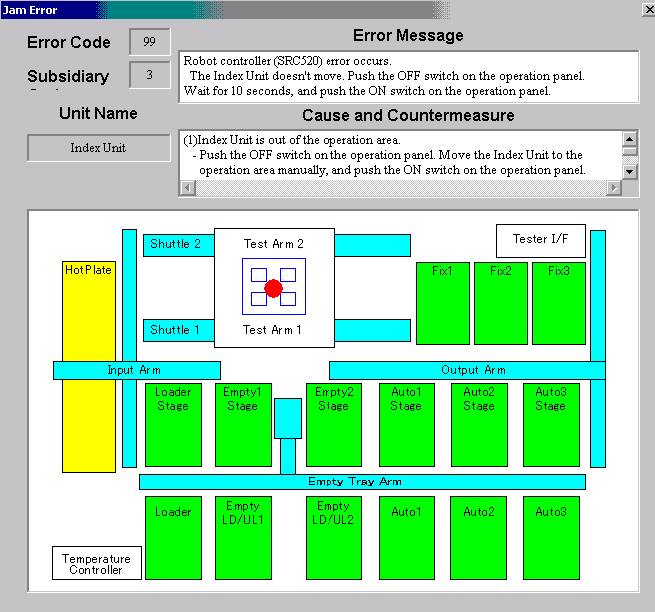
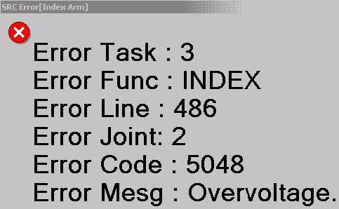
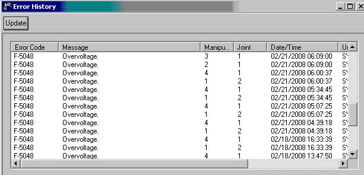

Service History
Subject: Intermittent error F-5048 Over voltage
Handler Model: NS-7000 (NS70-25, S/N: 181223) EEMS
Controller: RC520
Date: 20 Feb 2008
Symptom
NS-7000 encounter intermittent overvoltage error. Error code F 5048, it happened to robots 1 to 4 but more frequent to robot 1 and 4. Noticed when the error happened, Index arm is either in P50 or P51 position. Already tried exchanged motor driver module and exchanged MIB board 1 but error still occurs.

|
 |
 |
Action
- Swapped regenerative module from DU2 to DU1 dry run in 2 hours error still exist.
Swapped whole DU1 from NS70-02W dry run in 2 hours
still exist.
-Swapped input voltage from the DU1 to DU2 error migrated to DU2 .
(Input voltage is from AC/DC board)
-Checked on the main power voltage (input voltage at the drive unit)
DU1 and DU2 =4.5V compared to other handler DU1 and DU2 =7.5V
-Swapped AC/DC board from NS70-02W dry run for over night error still exist.
-Swapped DC power board and switching power supply module 1 & 2 error still exist.
Found that front panel of the drive box unit both of cooling fan fin broken and not spinning. Swapped the front panel of the drive box unit, dry run for over night, ok.
Cause
Spoilt cooling fans at front of Drive Units caused overvoltage F-5048.
Remarks
Warranty Requisition S0286 raised.